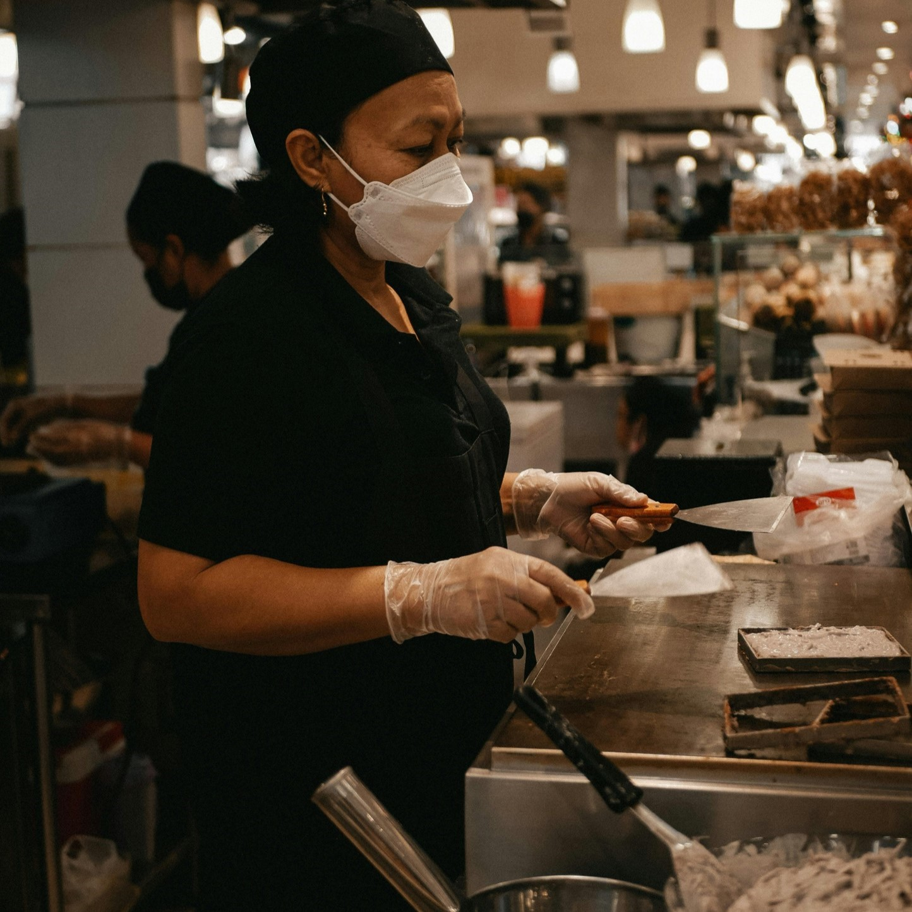
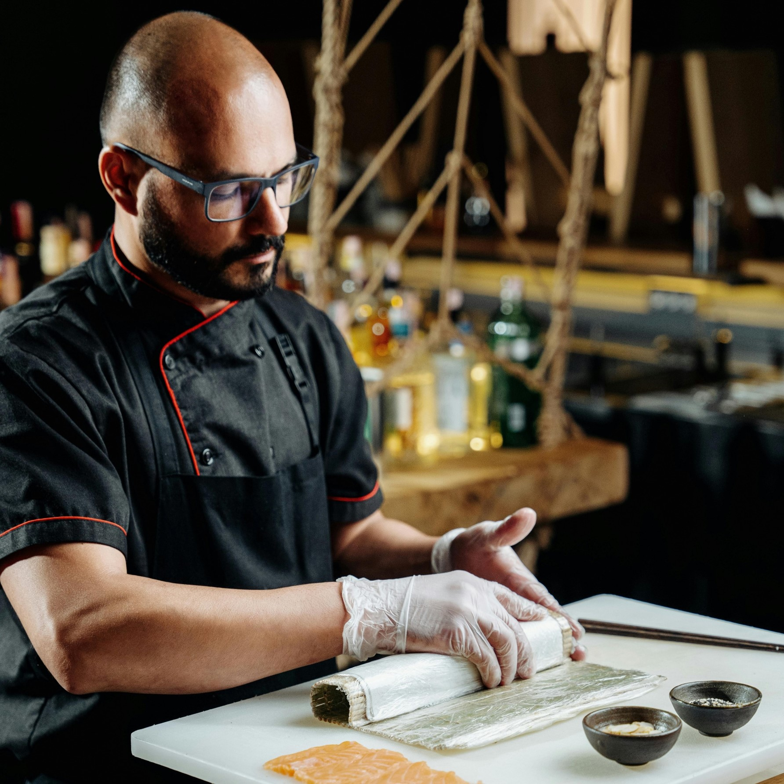
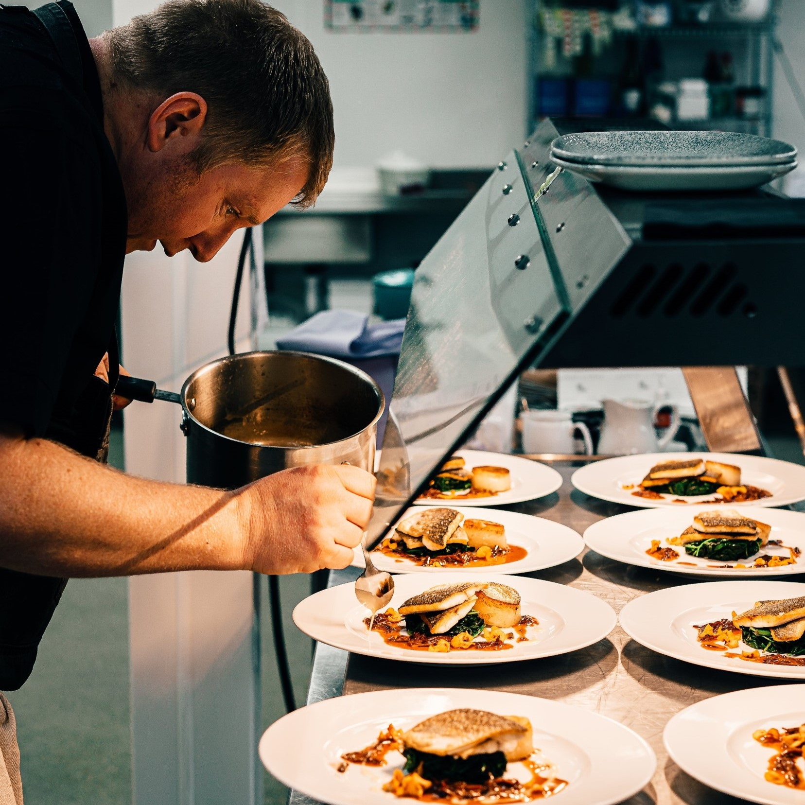
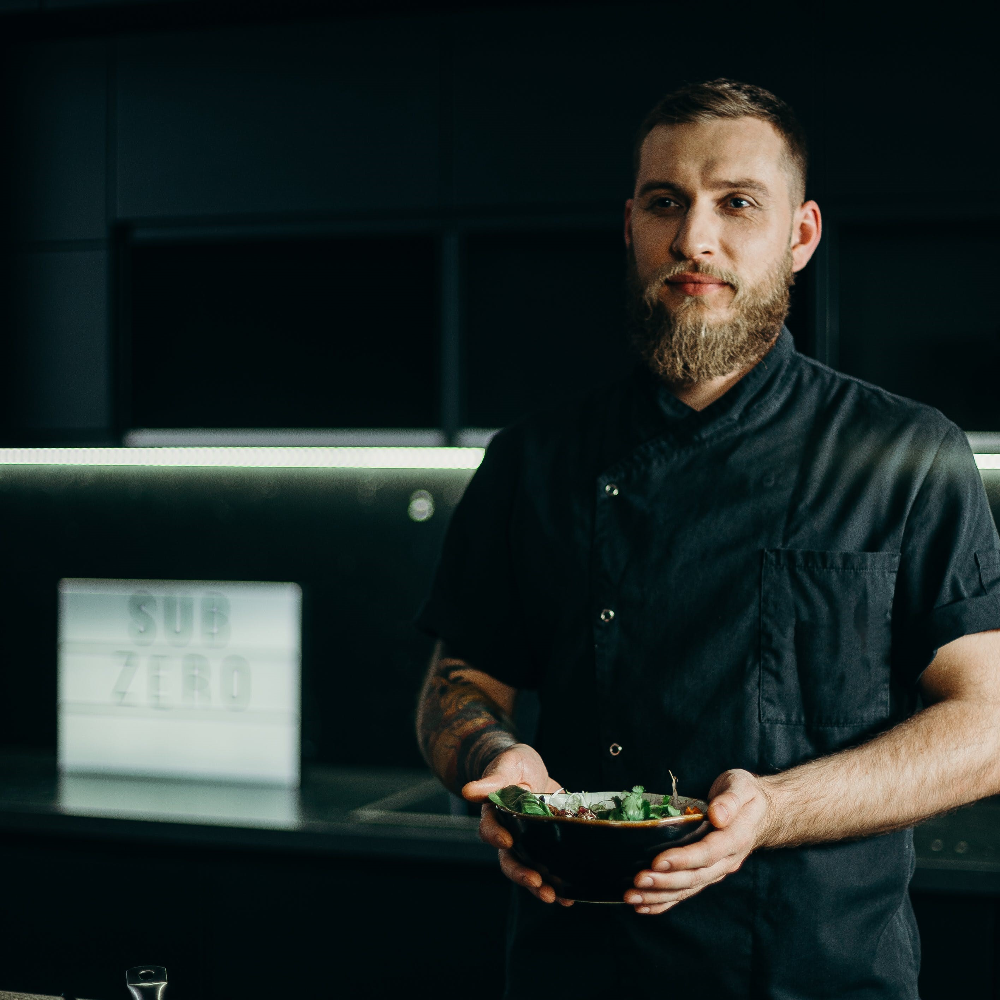
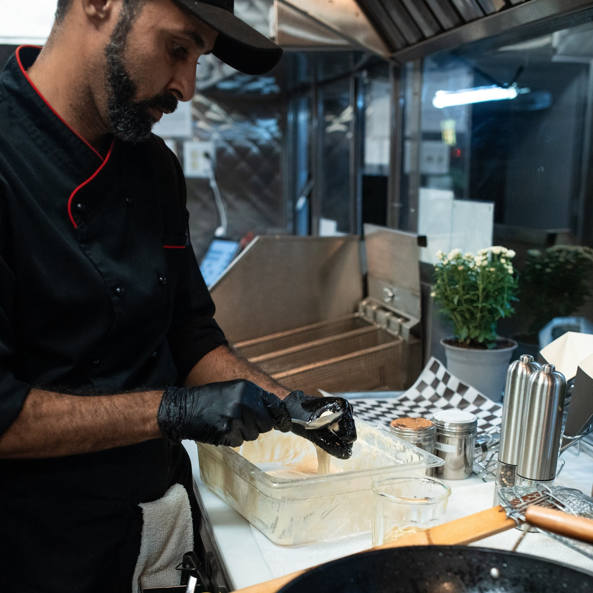
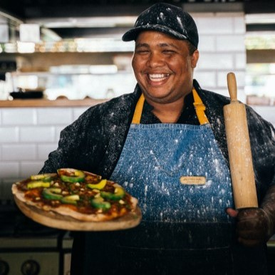

Chef Priya Kapoor
- Qualification: Culinary degree from the Institute of Hotel Management, New Delhi.
- Specialization: Mastery in North and South Indian cuisines, showcasing the diverse flavors of Indian regional cooking.
- Experience: 18 years of culinary expertise, including positions in top-rated Indian restaurants in India and the United States.

Chef Thompson
- Qualification: Diploma in Culinary Studies from the Culinary Academy of India, Hyderabad.
- Specialization: Latin American fusion cuisine, blending traditional flavors with innovative culinary techniques.
- Experience: 12 years of culinary experience, including roles in Michelin-starred restaurants in Paris and New York.

Chef Rajeev Iyree
- Qualification: Master's degree in South Indian Culinary Arts from the International Institute of Culinary Excellence, Bangalore.
- Specialization: South Indian gastronomy, focusing on authentic flavors from Karnataka and Tamil Nadu.
- Experience: 8 years of culinary experience, including positions in popular South Indian fine dining

Chef Alejandro Rodriguez:
- Qualification: Culinary Arts degree from the Culinary Institute of America.
- Specialization: Expert in French cuisine, particularly classic and contemporary techniques.
- Experience: 12 years of culinary expertise, with a background in iconic North Indian restaurants in Delhi.

Antonio Costa:
- Qualification: Degree in Mediterranean Culinary Arts from the Culinary School of Barcelona.
- Specialization : Mediterranean cuisine, with a focus on seafood and traditional Spanish dishes.
- Experience: 114 years of experience, including stints at renowned coastal restaurants in Spain and Greece.

Chef Vikram Singh
- Qualification : Degree in Rajasthani Culinary Arts from the Culinary Heritage Institute, Jaipur.
- Specialization: Rajasthani Royal Cuisine, known for traditional dishes from the princely state.
- Experience: 14 years of culinary expertise, with a background in heritage hotels and upscale Rajasthani restaurants.